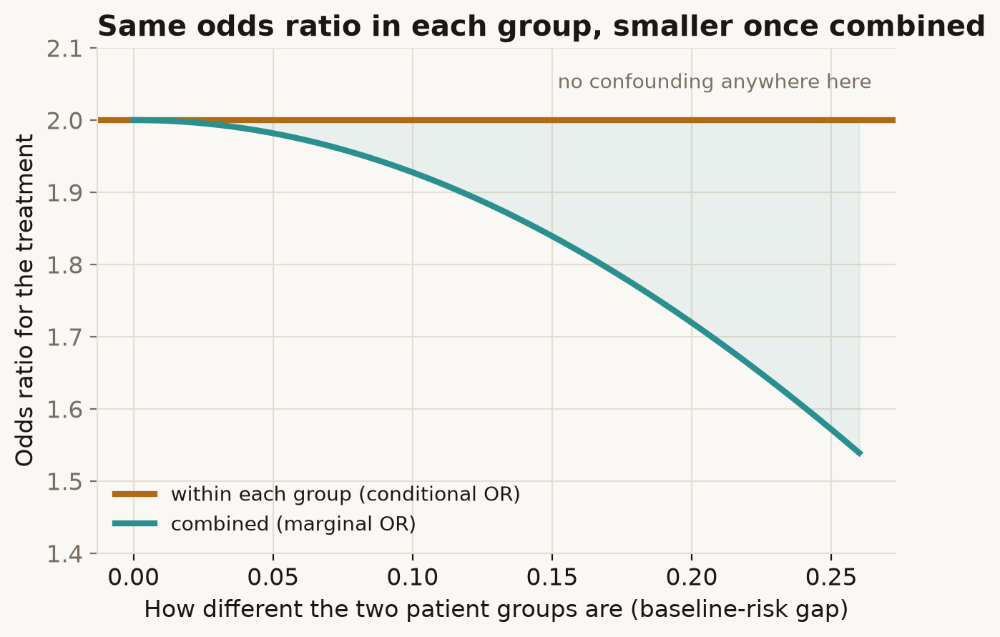

We expect that "adjusting" for something only matters when it's a confounder. For the odds ratio that's not quite true: it can change size when you account for a variable that has nothing to do with confounding — purely because of the arithmetic of odds.
Try it
A drug is tested in low-risk and high-risk patients, assigned at random — so there is no confounding — with the same odds ratio (2.0) in each group. Drag to make the two groups more different.
What's going on
Inside each group the odds ratio is exactly 2.0. Pool the two groups into one big table and the combined odds ratio comes out below 2.0 — and the more the groups differ in baseline risk, the further it drops. No confounding was added; no mistake was made. The odds ratio simply doesn't average the way you'd expect.
This is noncollapsibility. The odds ratio is a non-linear summary, and the odds of an average isn't the average of the odds. So the "whole population" odds ratio is a different number from the within-group one, even when the within-group value is identical everywhere. Crucially this isn't bias — both numbers are correct answers to slightly different questions ("the effect for a patient like this" versus "the effect across this whole mix of patients").

The risk difference and the risk ratio don't behave this way: their combined value is just a weighted average of the group values. It's the odds ratio (and the hazard ratio) that are non-collapsible — which is why a perfectly correct adjusted odds ratio can look "stronger" than the unadjusted one with no confounder in sight.
In the real world
This bites in everyday practice. Add a strong prognostic variable to a logistic regression and the treatment's odds ratio can move even if that variable is balanced across treatment groups — tempting an analyst to call it "confounding" when it isn't. It also means odds ratios from models with different covariates aren't directly comparable. Greenland, Robins and Pearl (1999) is the standard reference untangling collapsibility from confounding.
How not to get fooled
A change in the odds ratio on adjustment is not proof of confounding — check whether the covariate is actually associated with the treatment before calling it that. Report the conditioning set alongside any odds ratio, and if you want an effect measure that collapses cleanly, the risk difference or risk ratio is the safer summary.
Sources
- S. Greenland, J. M. Robins & J. Pearl (1999), Confounding and Collapsibility in Causal Inference, Statistical Science, 14(1): 29–46. doi
- M. A. Hernán & J. M. Robins (2020), Causal Inference: What If, Chapman & Hall/CRC — collapsibility and effect measures.
- R. M. Daniel, J. Zhang & D. Farewell (2021), Making apples from oranges: comparing noncollapsibility and confounding, American Journal of Epidemiology, 190(5): 697–700. doi